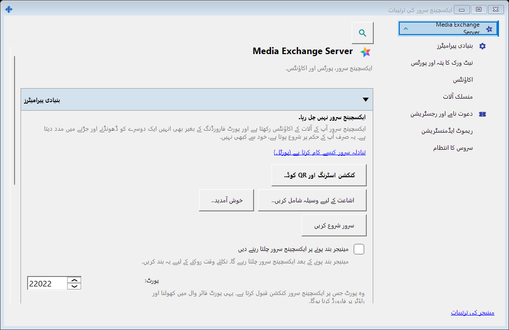
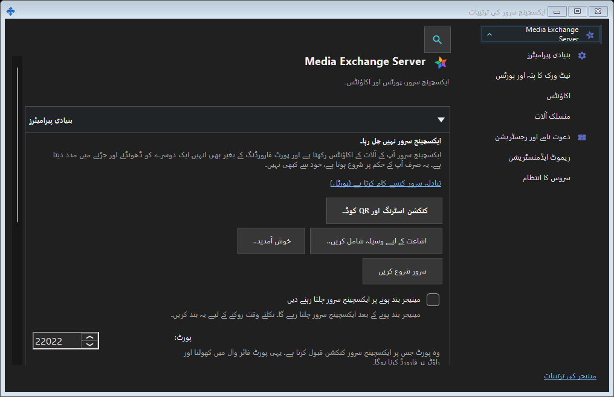

ایکسچینج سرور کی ترتیبات
یہ کس مقصد کے لیے ہے
SFTP: پورٹ، کنکشن حد، مقامی نیٹ ورک اور Windows سروس۔ ایکسچینج سرور: پتہ، TLS، اکاؤنٹس، آلات، دعوتیں، سروس، لاگ اور دور دراز انتظام۔


اس ترتیب میں
ٹرے یا جزو کے لنک سے کھولیں۔ ونڈو کھولنا یا بند کرنا سرور کو چلاتا یا روکتا نہیں۔ دور دراز لاگ ان کے لیے مقامی سرور ضروری نہیں۔
عناصر
ایکسچینج سرور کی ترتیبات
SFTP: پورٹ، کنکشن حد، مقامی نیٹ ورک اور Windows سروس۔ ایکسچینج سرور: پتہ، TLS، اکاؤنٹس، آلات، دعوتیں، سروس، لاگ اور دور دراز انتظام۔ ٹرے یا جزو کے لنک سے کھولیں۔ ونڈو کھولنا یا بند کرنا سرور کو چلاتا یا روکتا نہیں۔ دور دراز لاگ ان کے لیے مقامی سرور ضروری نہیں۔
مینیجر کی ترتیبات · SFTP اشتراک کی ترتیبات · ایکسچینج سرور کی ترتیبات